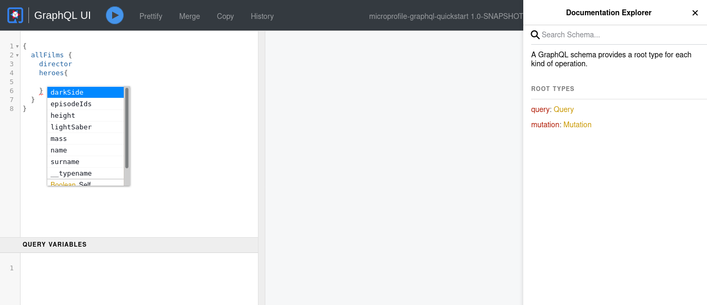

Quarkus - GraphQL
このガイドでは、QuarkusアプリケーションがSmallRye GraphQLエクステンションを使用して Eclipse MicroProfile GraphQL 仕様を利用する方法を説明します。
GraphQLの 仕様サイトにも記載されているように
GraphQLは、APIのクエリ言語であり、既存のデータでこれらのクエリを実行するためのランタイムです。 GraphQLは、API内のデータの完全で理解しやすい説明を提供し、クライアントが必要なものだけを正確に要求できるようにし、時間の経過とともにAPIを進化させやすくし、強力な開発者ツールを実現にします。
GraphQL はもともと2012年に Facebook が開発したもので、2015年からはオープンスタンダードとなっています。
GraphQLはREST APIの仕様を置き換えるものではなく、単なる別の手段です。RESTとは異なり、GraphQL APIは以下のようにクライアントに利益をもたらす機能を持っています。
- オーバーフェッチとアンダーフェッチの防止
-
REST API は、クライアントが決定できないサーバー主導の固定データレスポンスです。クライアントはすべてのフィールドを必要としなくても、クライアントはすべてのデータを取得しなければならないため、
Over-fetchingです。クライアントはまた、必要とされるすべてのデータを取得するために、最初の呼び出し(HATEOAS)に応じて複数のREST API呼び出しを必要とする場合があり、Under-fetchingです。 - API Evolution
-
GraphQL APIはクライアントから要求されたデータを返すので、既存のAPIにフィールドや機能を追加しても、既存のクライアントに大きな変更を加えることはありません。
前提条件
このガイドを完成させるには、以下が必要です:
-
less than 15 minutes
-
IDE
-
JDK 1.8+ がインストールされ、
JAVA_HOMEが適切に設定されていること -
Apache Maven 3.6.2+
アーキテクチャ
このガイドでは、 /graphql で GraphQL API を公開するシンプルな GraphQL アプリケーションを構築します。
この例は、人気のある GraphQL API にインスパイアされたものです。
ソリューション
次の章で紹介する手順に沿って、ステップを踏んでアプリを作成することをお勧めします。ただし、完成した例にそのまま進んでも構いません。
Gitレポジトリをクローンするか git clone https://github.com/quarkusio/quarkus-quickstarts.git 、 アーカイブ をダウンロードします。
ソリューションは microprofile-graphql-quickstart directory にあります。
Creating the Maven Project
まず、新しいプロジェクトが必要です。以下のコマンドで新規プロジェクトを作成します。
mvn io.quarkus:quarkus-maven-plugin:1.11.7.Final:create \
-DprojectGroupId=org.acme \
-DprojectArtifactId=microprofile-graphql-quickstart \
-DclassName="org.acme.microprofile.graphql.FilmResource" \
-Dextensions="resteasy,graphql"
cd microprofile-graphql-quickstartこのコマンドは、Quarkusで使用されているMicroProfile GraphQL仕様の実装である smallrye-graphql エクステンションをインポートして、Mavenプロジェクトを生成します。
すでにQuarkusプロジェクトが設定されている場合は、プロジェクトのベースディレクトリーで以下のコマンドを実行することで、プロジェクトに smallrye-graphql エクステンションを追加することができます。
./mvnw quarkus:add-extension -Dextensions="graphql"これにより、 pom.xml に以下が追加されます:
<dependency>
<groupId>io.quarkus</groupId>
<artifactId>quarkus-smallrye-graphql</artifactId>
</dependency>アプリケーションの準備: GraphQL API
このセクションでは、GraphQL APIの作成を開始します。
まず、遠く離れた銀河系の映画を表す次のような実体を作りなさい。
package org.acme.microprofile.graphql;
public class Film {
private String title;
private Integer episodeID;
private String director;
private LocalDate releaseDate;
public String getTitle() {
return title;
}
public void setTitle(String title) {
this.title = title;
}
public Integer getEpisodeID() {
return episodeID;
}
public void setEpisodeID(Integer episodeID) {
this.episodeID = episodeID;
}
public String getDirector() {
return director;
}
public void setDirector(String director) {
this.director = director;
}
public LocalDate getReleaseDate() {
return releaseDate;
}
public void setReleaseDate(LocalDate releaseDate) {
this.releaseDate = releaseDate;
}
}
public class Hero {
private String name;
private String surname;
private Double height;
private Integer mass;
private Boolean darkSide;
private LightSaber lightSaber;
private List<Integer> episodeIds = new ArrayList<>();
public String getName() {
return name;
}
public void setName(String name) {
this.name = name;
}
public String getSurname() {
return surname;
}
public void setSurname(String surname) {
this.surname = surname;
}
public Double getHeight() {
return height;
}
public void setHeight(Double height) {
this.height = height;
}
public Integer getMass() {
return mass;
}
public void setMass(Integer mass) {
this.mass = mass;
}
public Boolean getDarkSide() {
return darkSide;
}
public void setDarkSide(Boolean darkSide) {
this.darkSide = darkSide;
}
public LightSaber getLightSaber() {
return lightSaber;
}
public void setLightSaber(LightSaber lightSaber) {
this.lightSaber = lightSaber;
}
public List<Integer> getEpisodeIds() {
return episodeIds;
}
public void setEpisodeIds(List<Integer> episodeIds) {
this.episodeIds = episodeIds;
}
}
enum LightSaber {
RED, BLUE, GREEN
}先ほど作成したクラスは、クライアントがアクセス可能なデータ（オブジェクト、フィールド、リレーションシップ）のセットであるGraphQLスキーマを記述しています。
引き続き、リポジトリとして動作するCDI Beanの例を見てみましょう。
@ApplicationScoped
public class GalaxyService {
private List<Hero> heroes = new ArrayList<>();
private List<Film> films = new ArrayList<>();
public GalaxyService() {
Film aNewHope = new Film();
aNewHope.setTitle("A New Hope");
aNewHope.setReleaseDate(LocalDate.of(1977, Month.MAY, 25));
aNewHope.setEpisodeID(4);
aNewHope.setDirector("George Lucas");
Film theEmpireStrikesBack = new Film();
theEmpireStrikesBack.setTitle("The Empire Strikes Back");
theEmpireStrikesBack.setReleaseDate(LocalDate.of(1980, Month.MAY, 21));
theEmpireStrikesBack.setEpisodeID(5);
theEmpireStrikesBack.setDirector("George Lucas");
Film returnOfTheJedi = new Film();
returnOfTheJedi.setTitle("Return Of The Jedi");
returnOfTheJedi.setReleaseDate(LocalDate.of(1983, Month.MAY, 25));
returnOfTheJedi.setEpisodeID(6);
returnOfTheJedi.setDirector("George Lucas");
films.add(aNewHope);
films.add(theEmpireStrikesBack);
films.add(returnOfTheJedi);
Hero luke = new Hero();
luke.setName("Luke");
luke.setSurname("Skywalker");
luke.setHeight(1.7);
luke.setMass(73);
luke.setLightSaber(LightSaber.GREEN);
luke.setDarkSide(false);
luke.getEpisodeIds().addAll(Arrays.asList(4, 5, 6));
Hero leia = new Hero();
leia.setName("Leia");
leia.setSurname("Organa");
leia.setHeight(1.5);
leia.setMass(51);
leia.setDarkSide(false);
leia.getEpisodeIds().addAll(Arrays.asList(4, 5, 6));
Hero vader = new Hero();
vader.setName("Darth");
vader.setSurname("Vader");
vader.setHeight(1.9);
vader.setMass(89);
vader.setDarkSide(true);
vader.setLightSaber(LightSaber.RED);
vader.getEpisodeIds().addAll(Arrays.asList(4, 5, 6));
heroes.add(luke);
heroes.add(leia);
heroes.add(vader);
}
public List<Film> getAllFilms() {
return films;
}
public Film getFilm(int id) {
return films.get(id);
}
public List<Hero> getHeroesByFilm(Film film) {
return heroes.stream()
.filter(hero -> hero.getEpisodeIds().contains(film.getEpisodeID()))
.collect(Collectors.toList());
}
public void addHero(Hero hero) {
heroes.add(hero);
}
public Hero deleteHero(int id) {
return heroes.remove(id);
}
public List<Hero> getHeroesBySurname(String surname) {
return heroes.stream()
.filter(hero -> hero.getSurname().equals(surname))
.collect(Collectors.toList());
}
}それでは、最初のGraphQL APIを作成してみましょう。
org.acme.microprofile.graphql.FilmResource クラスを以下のように編集します。
@GraphQLApi (1)
public class FilmResource {
@Inject
GalaxyService service;
@Query("allFilms") (2)
@Description("Get all Films from a galaxy far far away") (3)
public List<Film> getAllFilms() {
return service.getAllFilms();
}
}| 1 | @GraphQLApi アノテーションは、CDI BeanがGraphQLのエンドポイントになることを示しています。 |
| 2 | @Query アノテーションは、このメソッドが allFilms という名前でクエリー可能であることを定義します。 |
| 3 | クエリー可能なメソッドのドキュメントです。 |
アノテーション @Query の値はオプションで、これがない場合は暗黙のうちにメソッド名がデフォルトになります。
|
このようにして、最初のクエリー可能なAPIが作成されましたが、これは後に拡張されます。
イントロスペクト
GraphQL APIの完全なスキーマは、以下を呼び出すことで取得できます。
curl http://localhost:8080/graphql/schema.graphqlサーバーは、GraphQL APIの完全なスキーマを返します。
GraphiQL UI
| 実験的 - MicroProfileの仕様に含まれません |
GraphiQL UIは、GraphQL APIとの簡単なやり取りを可能にする素晴らしいツールです。
Quarkusの smallrye-graphql エクステンションは、 GraphiQL と一緒に出荷され、 dev と test モードでデフォルトで有効になりますが、 production モードでも明示的に設定することができます。
GraphiQLは、 http://localhost:8080/graphql-ui/ からアクセスできます。

GraphQL UIのセキュリティを追加/削除する方法については Webエンドポイントの認可 のガイドをご覧ください。
Query the GraphQL API
それでは、 dev モードで展開されたGraphiQLページにアクセスしてみましょう。
以下のクエリをGraphiQLに入力し、 play ボタンを押します。
query allFilms {
allFilms {
title
director
releaseDate
episodeID
}
}クエリには Film クラスのすべてのフィールドが含まれているので、レスポンスではすべてのフィールドを取得します。GraphQL APIのレスポンスはクライアントが決めるものなので、クライアントはどのフィールドを必要とするかを選択することができます。
クライアントが必要としているのは title と releaseDate だけで、先ほどの API 呼び出しでは不要なデータを Over-fetching していたと仮定しましょう。
以下のクエリをGraphiQLに入力し、 play ボタンを押します。
query allFilms {
allFilms {
title
releaseDate
}
}レスポンスでは、必要なフィールドのみを取得していることに注意してください。そのため、 Over-fetching を防ぐことができました。
引き続き、 FilmResource クラスに以下を追加して、GraphQL API を拡張してみましょう。
@Query
@Description("Get a Films from a galaxy far far away")
public Film getFilm(@Name("filmId") int id) {
return service.getFilm(id);
}
@Query のアノテーションで値を除外していることに注目してください。したがって、クエリの名前は、 get を除いたメソッド名が暗黙的に設定されます。
|
このクエリは、クライアントがIDでフィルムを検索するためのものです。
GraphiQL に以下の内容を入力してリクエストしてください。
query getFilm {
film(filmId: 1) {
title
director
releaseDate
episodeID
}
}先ほどの例では、 film というクエリメソッドの要求フィールドがそのように決定できます。このようにして、個々の映画の情報を取得することができます。
しかし、クライアントが filmId 0 と 1 の両方の映画を必要とするとします。REST APIでは、クライアントはAPIに2回コールする必要があります。したがって、クライアントは Under-fetching となります。
GraphQLでは、一度に複数のクエリを実行することが可能です。
以下をGraphiQLに入力して、2つの映画を検索します。
query getFilms {
film0: film(filmId: 0) {
title
director
releaseDate
episodeID
}
film1: film(filmId: 1) {
title
director
releaseDate
episodeID
}
}これにより、クライアントは1回のリクエストで必要なデータを取得できるようになりました。
Expanding the API
これまでは、映画のデータを取得するための GraphQL API を作成していました。今度は、クライアントが Film の Hero データを取得できるようにしたいと考えています。
FilmResource のクラスに以下を追加します。
public List<Hero> heroes(@Source Film film) { (1)
return service.getHeroesByFilm(film);
}| 1 | Film で応答するクエリに List<Hero> データを追加できるようになりました。 |
このメソッドを追加することで、GraphQL APIのスキーマが事実上変更されました。 スキーマが変更されたにもかかわらず、以前のクエリはそのまま動作します。 今回は、 Film の Hero のデータを取得できるようにAPIを拡張しただけですから。
GraphiQLに以下のように入力して、フィルムとヒーローのデータを取得します。
query getFilmHeroes {
film(filmId: 1) {
title
director
releaseDate
episodeID
heroes {
name
height
mass
darkSide
lightSaber
}
}
}今や、レスポンスには映画のヒーローたちも含まれています。
バッチ処理
今回の getAllFilms のように Collection の戻り値を公開している場合は、より効率的にヒーローを取得するために、上記のバッチ形式を使用するとよいでしょう。
public List<List<Hero>> heroes(@Source List<Film> films) { (1)
// Here fetch all hero lists
}| 1 | ここでは、映画を一括して受け取ることで、対応するヒーローを取り出すことができます。 |
リアクティブ
クエリは、例えば Uni や CompletionStage をリターンタイプとして使用することでリアクティブにすることができます。
@Query
@Description("Get a Films from a galaxy far far away")
public Uni<Film> getFilm(@Name("filmId") int id) {
// ...
}
graphql-javaというライブラリを使用しているため、 Uni はボンネット内で CompletionStage を作成しています。
|
または、 CompletionStage を使用することもできます。
@Query
@Description("Get a Films from a galaxy far far away")
public CompletionStage<Film> getFilm(@Name("filmId") int id) {
// ...
}Uni または CompletionStage を使用すると、リクエストに複数のクエリが含まれている場合、それらが同時に実行されることになります。
例えば、以下のクエリでは、 film0 と film1 を同時に取得します。
query getFilms {
film0: film(filmId: 0) {
title
director
releaseDate
episodeID
}
film1: film(filmId: 1) {
title
director
releaseDate
episodeID
}
}ミューテーション
ミューテーションは、データの作成、更新、削除の際に使用されます。
それでは、GraphQL APIにヒーローの追加と削除の機能を追加してみましょう。
FilmResource のクラスに以下を追加します。
@Mutation
public Hero createHero(Hero hero) {
service.addHero(hero);
return hero;
}
@Mutation
public Hero deleteHero(int id) {
return service.deleteHero(id);
}GraphiQL に次のように入力すると、 Hero が挿入されます。
mutation addHero {
createHero(hero: {
name: "Han",
surname: "Solo"
height: 1.85
mass: 80
darkSide: false
episodeIds: [4, 5, 6]
}
)
{
name
surname
}
}このミューテーションを利用することで、私たちのサービスに Hero エンティティを作成しました。
レスポンスの中で、作成したヒーローの name と surname を取得していることに注目してください。これは mutation クエリの { } の中で、これらのフィールドをレスポンスで取得することを選択したためです。これは、クライアントが必要とするサーバー側で生成されたフィールドである可能性があります。
それでは、エントリーを削除してみましょう。
mutation DeleteHero {
deleteHero(id :3){
name
surname
}
}
createHero の mutation 法と同様に、 { } で定義されている削除したヒーローの name と surname も取得します。
フィールド別のクエリの作成
クエリは個々のフィールドに対して行うこともできます。例えば、ヒーローの名字を照会するメソッドを作ってみましょう。
FilmResource のクラスに以下を追加します。
@Query
public List<Hero> getHeroesWithSurname(@DefaultValue("Skywalker") String surname) {
return service.getHeroesBySurname(surname);
}@DefaultValue のアノテーションを使用して、パラメータが提供されていない場合、姓の値は Skywalker になることを決定しました。
以下のクエリをGraphiQLでテストしてみましょう。
query heroWithDefaultSurname {
heroesWithSurname{
name
surname
lightSaber
}
}
query heroWithSurnames {
heroesWithSurname(surname: "Vader") {
name
surname
lightSaber
}
}コンテキスト
この実験的なSmallRye固有の機能を使えば、コードのどこにいてもGraphQLリクエストの情報を得ることができます。
@Inject
Context context;コンテキストオブジェクトによって、以下を取得することができます。
-
the original request (Query/Mutation)
-
the arguments
-
the path
-
the selected fields
-
any variables
これにより、データストアへのダウンストリームクエリを最適化することができます。
詳細は JavaDoc を参照してください。
GraphQL-Java
また、このコンテキストオブジェクトは、リーキーな抽象化を利用することで、基礎となる graphql-java の機能にフォールダウンすることを可能にします。
DataFetchingEnvironment dfe = context.unwrap(DataFetchingEnvironment.class);また、スキーマ生成時に基盤となる graphql-java にアクセスして、独自の機能を直接追加することもできます。
public GraphQLSchema.Builder addMyOwnEnum(@Observes GraphQLSchema.Builder builder) {
// Here add your own features directly, example adding an Enum
GraphQLEnumType myOwnEnum = GraphQLEnumType.newEnum()
.name("SomeEnum")
.description("Adding some enum type")
.value("value1")
.value("value2").build();
return builder.additionalType(myOwnEnum);
}@Observer を使用することで、スキーマビルダーに何かを追加することができます。
スカラーへのマップ
また、SmallRye特有の実験的な機能として、既存のスカラー（実装によって特定のJava型にマッピングされている）を別の型にマッピングしたり、GraphQLで通常 Type や Input を作成するような複雑なオブジェクトを既存のスカラーにマッピングしたりすることができます。
既存のスカラーを別のタイプにマッピングします。
public class Movie {
@ToScalar(Scalar.Int.class)
Long idLongThatShouldChangeToInt;
// ....
}上記では、 Long java型を、 デフォルト の BigInteger ではなく、 Int スカラー型にマッピングしています。
複雑なオブジェクトをスカラー型にマッピングします。
public class Person {
@ToScalar(Scalar.String.class)
Phone phone;
// ....
}これは、GraphQLで Type や Input を作成するのではなく、Stringのスカラーにマッピングされます。
上記の操作を行うためには、 Phone オブジェクトは、文字列（または Int / Date など）を受け取るコンストラクタを持つか、文字列（または Int / Date など）のセッターメソッドを持つか、 fromString (または fromInt / fromDate - スカラーの型に依存）のスタティックメソッドを持つ必要があります。
例えば、以下のようになります。
public class Phone {
private String number;
// Getters and setters....
public static Phone fromString(String number) {
Phone phone = new Phone();
phone.setNumber(number);
return phone;
}
}@ToScalar の機能については、 JavaDoc を参照してください。
エラーコード
(SmallRye特有の) @ErrorCode を使用することで、GraphQLレスポンスのエラー出力にエラーコードを追加することができます。
@ErrorCode("some-business-error-code")
public class SomeBusinessException extends RuntimeException {
// ...
}SomeBusinessException が発生した場合、エラー出力にはエラーコードが表示されます。
{
"errors": [
{
"message": "Unexpected failure in the system. Jarvis is working to fix it.",
"locations": [
{
"line": 2,
"column": 3
}
],
"path": [
"annotatedCustomBusinessException"
],
"extensions": {
"exception": "io.smallrye.graphql.test.apps.error.api.ErrorApi$AnnotatedCustomBusinessException",
"classification": "DataFetchingException",
"code": "some-business-error-code" (1)
}
}
],
"data": {
...
}
}| 1 | エラーコード |
まとめ
MicroProfile GraphQLを使用すると、クライアントは、必要なデータだけを取得することが出来、Over-fetching と Under-fetching を防ぐことが出来ます。
GraphQL APIは、以前のクエリを壊すことなく拡張することができ、API evolution を容易にすることができます。
設定リファレンス
ビルド時に固定される設定プロパティ - それ以外の設定プロパティは実行時に上書き可能
タイプ |
デフォルト |
|
|---|---|---|
The rootPath under which queries will be served. Default to /graphql |
string |
|
Enable metrics. By default this will be enabled if the metrics extension is added. |
boolean |
|
Enable tracing. By default this will be enabled if the tracing extension is added. |
boolean |
|
Enable validation. By default this will be enabled if the Hibernate Validator extension is added. |
boolean |
|
Enable eventing. Allow you to receive events on bootstrap and execution. |
boolean |
|
Change the type naming strategy. |
|
|
If GraphQL UI should be enabled. By default, GraphQL UI is enabled if it is included (see |
boolean |
|
タイプ |
デフォルト |
|
The path where GraphQL UI is available. The value |
string |
|
Always include the UI. By default this will only be included in dev and test. Setting this to true will also include the UI in Prod |
boolean |
|